Custom 3D Printed High Heel
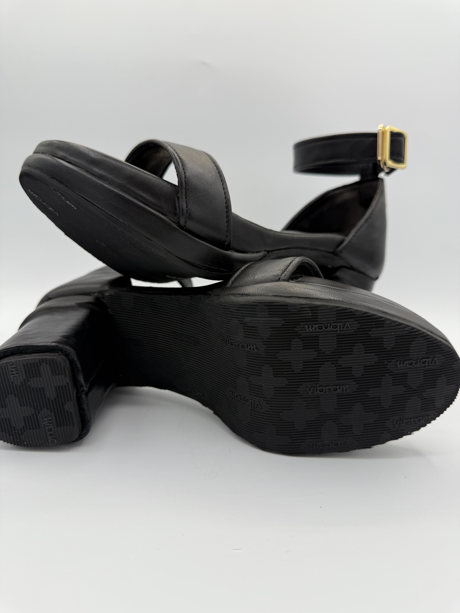3D printed a fully functional, ergonomic prototype of custom high-heel shoes using white light laser scanning to capture precise foot geometry. Built and tested a “looks like, works like” prototype through iterative development, incorporating feedback from design reviews to improve fit, comfort, and aesthetics for a high-end footwear concept.
Interactive Education System

Used deepfake technology to create dynamic learning experiences via AI-generated avatars for personalized, engaging education. Designed the hardware and network integration to enable real-time feedback, and adaptive learning across student and teacher devices.
Mechanical Pump Design
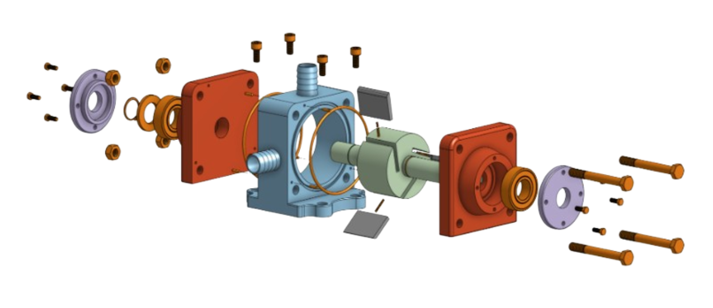Designed a seasonal-use maple syrup pump with a focus on manufacturability, off-the-shelf component integration, and ease of off-season storage. Created detailed 3D CAD models, engineering drawings with GD&T, and assembly documentation to support production and cost analysis.
Pump Fabrication
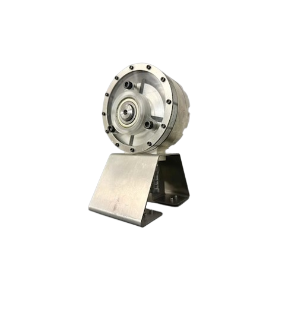Manufactured a fully functional rotary vane pump from a provided design. The project involved hands-on fabrication using a variety of manufacturing processes including turning, milling, casting, waterjet cutting, laser cutting, and precision assembly techniques.
Gasket Project
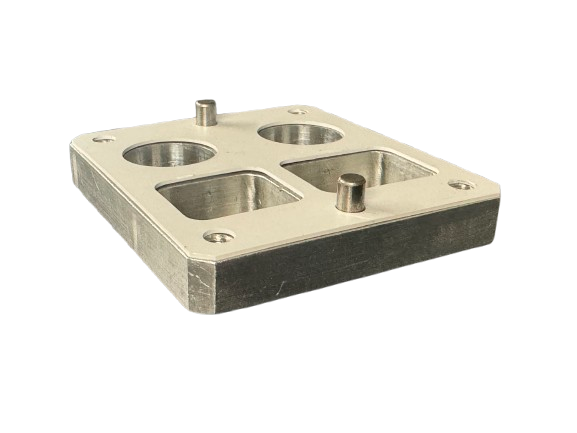Reverse-engineered a custom mechanical fixture by measuring and modeling a matching gasket in Onshape, then machined it using CNC toolpaths on a HAAS mill and verified fit for accuracy.
Compression-Tested Lattice Structure
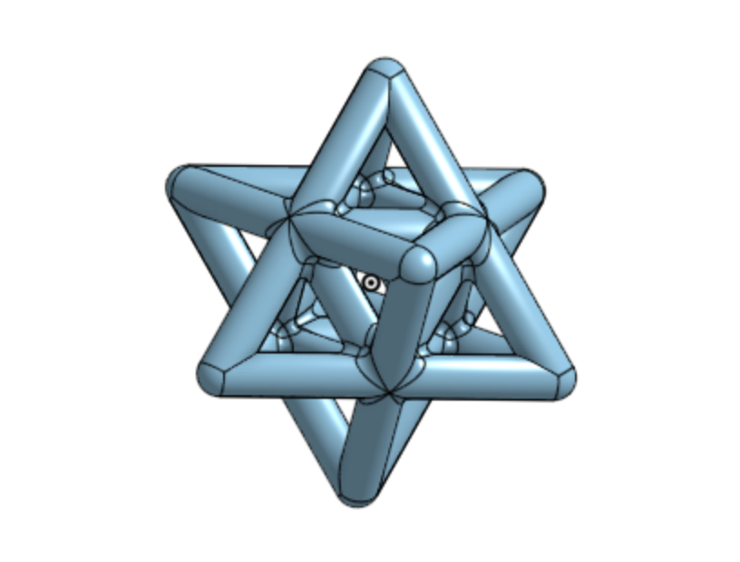Designed and printed a lightweight 3D structure that met strict dimensional and load-bearing criteria in dual-axis compression tests. Applied additive manufacturing techniques and material selection to optimize strength and maintain structural integrity within a 75 mm cube.
Purse Hook
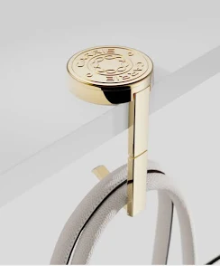Developed and prototyped a functional purse holder through multiple design-validation stages, focusing on manufacturability, cost, and user needs. The project simulated a full production cycle, including iterative prototyping (EVT, DVT, PVT), process planning, and the creation of 19 industry-standard production documents to support a mass production proposal.
Brosa Con Tutto
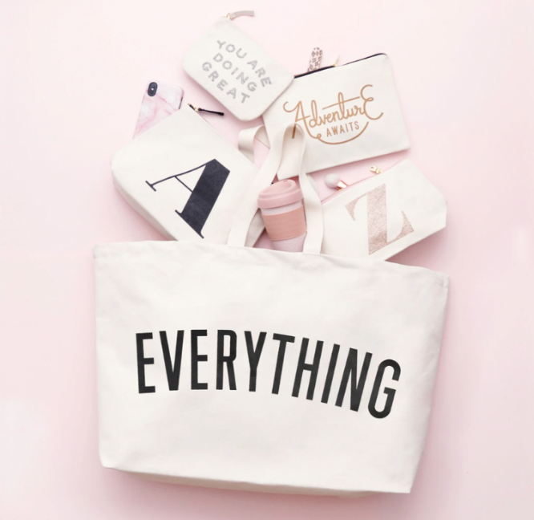Borsa Con Tutto is a stylish, multifunctional bag designed for grab-and-go convenience. Pre-loaded with essentials and paired with an optional refill subscription, it keeps users organized without sacrificing style. The project applied product management principles, taking the bag through the full product life cycle to balance user needs, cost, quality, and feasibility, resulting in a practical, elegant solution for busy, multitasking lifestyles.
Carter's Sustainable Strategy Consulting
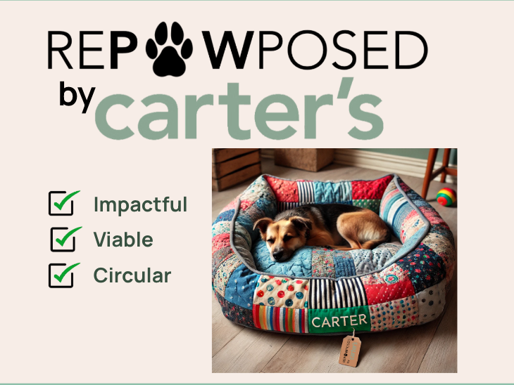Worked with Carter's, a leading children’s apparel brand, to identify sustainable business practices through interviews, data analysis, and field research to support environmental and operational improvements.
Strategy & Profitability Consulting
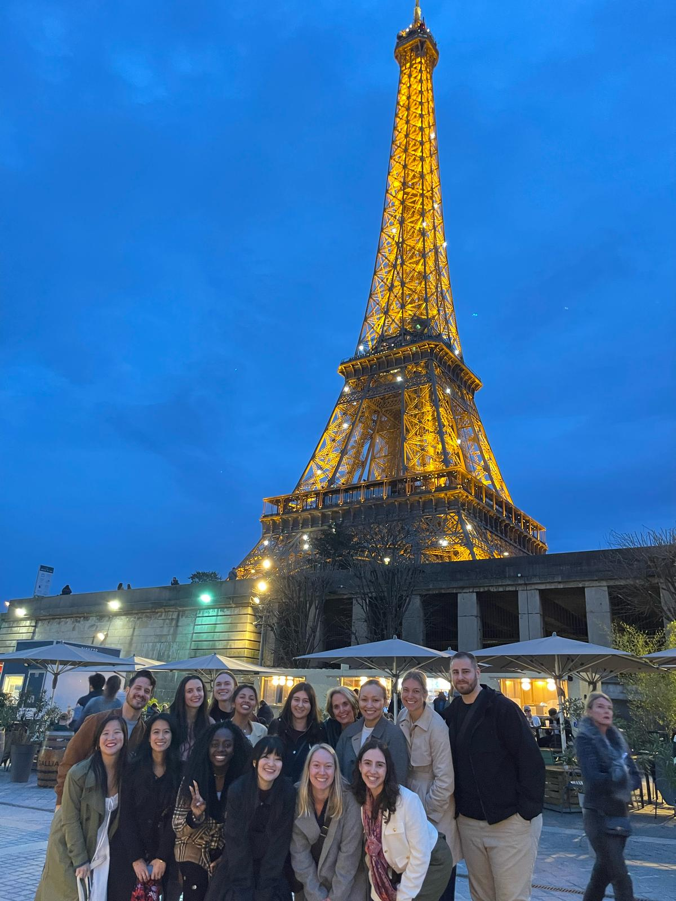Collaborated on a strategic analysis of a global fashion brand’s wholesale operations, assessing profitability and performance across 500+ B2B clients in 35+ countries to identify high-value segments, reduce inefficiencies, and guide future expansions.
Turtle Project
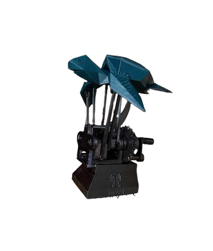3D printed and assembled a 14-part mechanical sea turtle model that mimics a swimming motion, adjusting print settings and tolerances to ensure smooth movement and a clean final look.
SLA Mini Planter
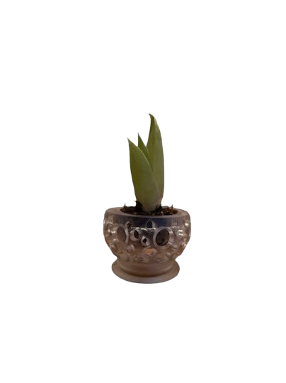Created a small, detailed 3D printed planter using SLA printing, featuring complex shapes and fine details that wouldn’t be possible with traditional manufacturing methods.
Precision Marble Run
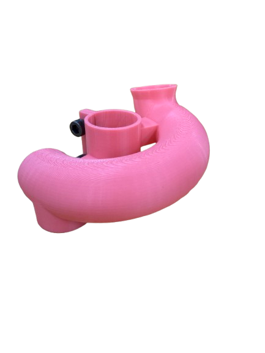Designed and built a small marble run piece that attaches to a steel tube, guiding a metal ball smoothly along a short track and handing it off reliably to the next section.
Service Design Competition: Student Passport

Worked with a team to answer the question, “What if students were better networked at their transition points throughout college?” Using design thinking, we created Passpotal—a milestone tracking system with the tagline “We revolve around you.” The digital portal keeps students involved and informed across all four years and ends with a printed memento presented at graduation.
The Doughnut Project

Partnered with a local doughnut shop seeking to attract new customers and increase revenue within strict operational limits. Proposed a student-focused marketing strategy promoting during Welcome Week and offering a student discount to drive revenue growth.